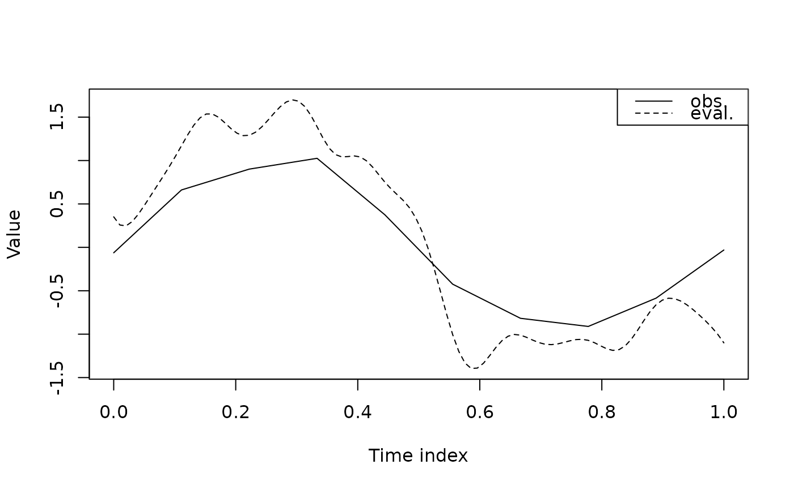

Evaluate \(F_j\) and Recovery the Trajectory for a Single Variable
Source:R/evaluate_Fj.R
evaluate_Fj.RdEvaluates the derivative function \(F_j\) of a single variable on the
integration grid tt and recovers the trajectory by numerical integration,
given estimates of \(b_j\), \(c_j\), and \(\theta_j\).
Usage
evaluate_Fj(
bj,
cj,
interaction_term,
kernel,
kernel_params,
kk_array = NULL,
obs_time,
theta_j,
tt,
Yj,
yy_smth
)Arguments
- bj
A numeric scalar, giving the estimated \(b_j\) from Kernel ODE (i.e.,
res_bj[j]).- cj
A numeric vector of length
n, giving the estimated \(c_j\) from Kernel ODE (i.e.,res_cj[,j]).- interaction_term
A logical value specifying whether to include interaction effects in the model.
- kernel
Kernel function to use.
- kernel_params
A list of length
p, where each element is a named list of parameters for a specific variable (e.g.,list(bandwidth = 1)for Gaussian kernel). If the list has length 1, the same parameter set is used for all variables. This is typically the output ofauto_select_kernel_params().- kk_array
Optional precomputed kernel array on
tt. An array of dimension (len,len,p) wheninteraction_term = FALSE, or (len,len,p^2) wheninteraction_term = TRUE, wherelen = length(tt). Providingkk_arrayenables reuse across variables and can greatly reduce computation.- obs_time
A numeric vector of length
nrepresenting observation time points.- theta_j
A numeric vector of length
p(ifinteraction = FALSE) orp^2(ifinteraction = TRUE), giving the estimated \(\theta_j\) coefficients for variable \(j\) from Kernel ODE (i.e.,res_theta[,j]).- tt
A numeric vector representing a finer time grid used for evaluating the smoothed trajectories and their derivatives.
- Yj
A numeric vector of length
n, giving the observed trajectory for variable \(j\) (i.e.,Y[, j]).- yy_smth
Numeric matrix of dimension (
len,p); smoothed trajectories evaluated ontt(i.e., output ofkernelODE_step1()).
Value
A list with components:
theta_j0A numeric scalar giving estimated initial condition for variable \(j\).
Fj_estA numeric vector (length
len) giving the evaluated \(F_j\) ontt.yy_estA numeric vector (length
len) giving the recovered trajectory ontt.TV_estA numeric scalar giving the total variation \(\int |F_j(t)| \, dt\) approximated on
tt.ttSame as the input
tt, the grid on which \(F_j\) and the trajectory is evaluated.
Details
Given \(b_j\), \(c_j\), and \(\theta_j\), the function
constructs the kernel-weighted integral operator on the grid tt to evaluate
\(F_j\), estimates the initial condition \(\theta_{j0}\), then recovers
the trajectory via cumulative summation on tt (first-order approximation).
When provided, kk_array is reused to avoid recomputing kernel blocks.
Examples
set.seed(1)
obs_time <- seq(0, 1, length.out = 10)
Y <- cbind(sin(2 * pi * obs_time), cos(4 * pi * obs_time)) + 0.1 * matrix(rnorm(20), 10, 2) # each col is a variable
tt <- seq(0, 1, length.out = 100)
res_step1 <- kernelODE_step1(Y = Y, obs_time = obs_time, tt = tt)
kernel <- "gaussian"
kernel_params <- auto_select_kernel_params(kernel = kernel, Y = Y)
res_step2 <- kernelODE_step2(Y = Y, obs_time = obs_time, yy_smth = res_step1$yy_smth, tt = tt, kernel = kernel, kernel_params = kernel_params)
j <- 1 # evaluate Fj for the first variable
res_eval <- evaluate_Fj(bj = res_step2$res_bj[j],
cj = res_step2$res_cj[,j],
interaction_term = FALSE,
kernel = kernel,
kernel_params = kernel_params,
obs_time = obs_time,
theta_j = res_step2$res_theta[,j],
tt = tt,
Yj = Y[,j],
yy_smth = res_step1$yy_smth)
yy_j_est <- res_eval$yy_est
# plot the evaluated traj
plot(NA, type = "n",
xlab = "Time index", ylab = "Value",
xlim = c(0,1), ylim = range(c(yy_j_est, Y[,j]), na.rm = TRUE))
lines(obs_time, Y[,j], lty = 1)
lines(tt, yy_j_est, lty = 2)
legend("topright",
legend = c("obs.", "eval."),
lty = c(1,2),
col = "black")
